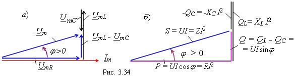

|
 Умножив все стороны треугольника напряжений на значение тока , получим подобный треугольник мощностей (рис. 3.34, б), в котором полная мощность
т. е. полная мощность S цепи равна произведению действующих значений напряжения и тока на её зажимах. Ёе измеряют в вольт-амперах [В·А] или в киловольт-амперах [кВ·А]. Реактивная мощность цепи
Мощности P, Q и S, потребляемые цепью синусоидального тока, связаны соотношением
Необходимо отметить, что потребление мощности источника энергии и накопление энергии в индуктивном и ёмкостном элементах происходят в разное время: если в магнитном поле индуктивной катушки накапливается магнитная энергия, то в это время электрическая энергия, запасенная в электрическом поле конденсатора, возвращается источнику и обратно. |
|||||||